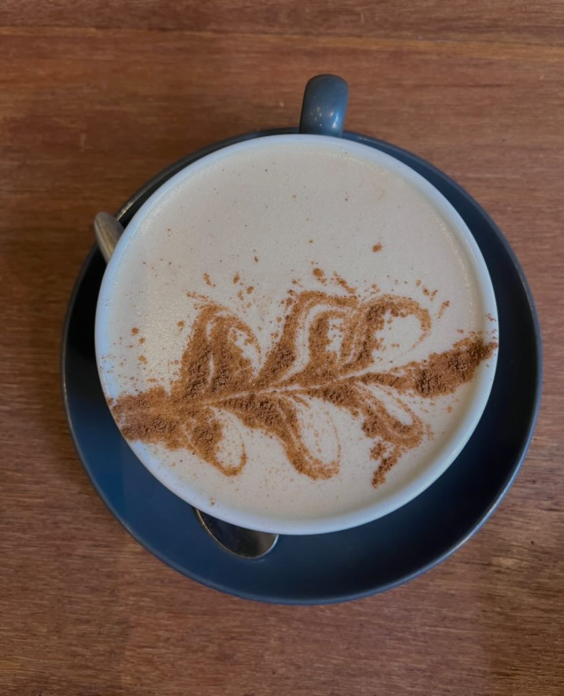
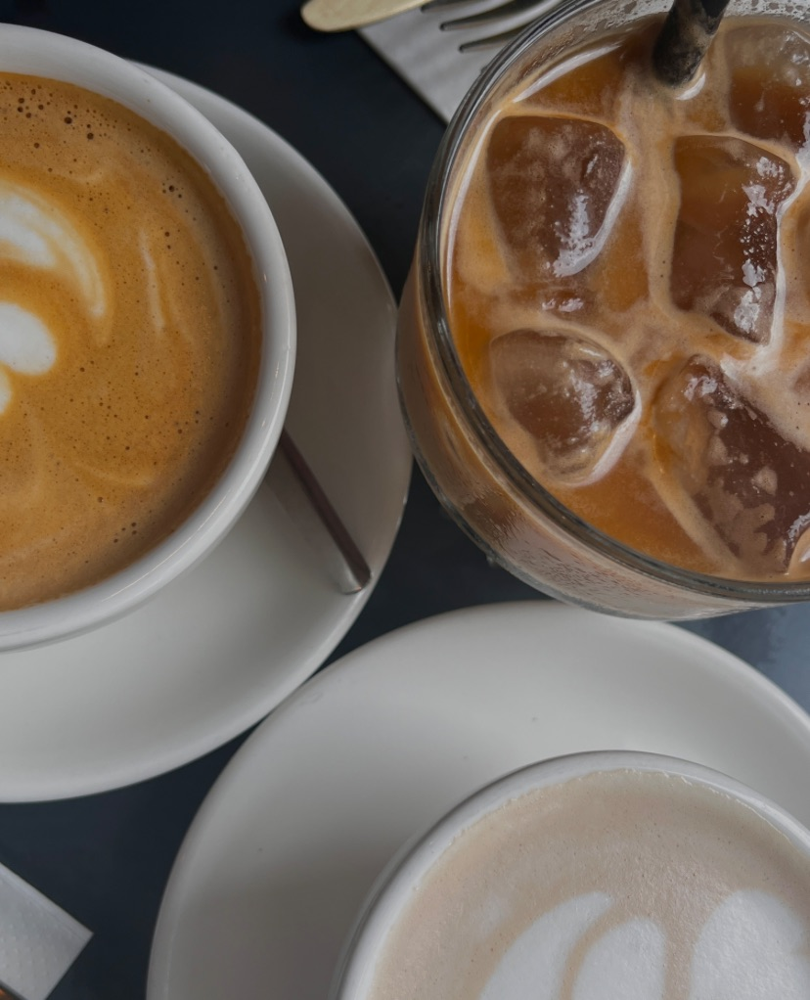
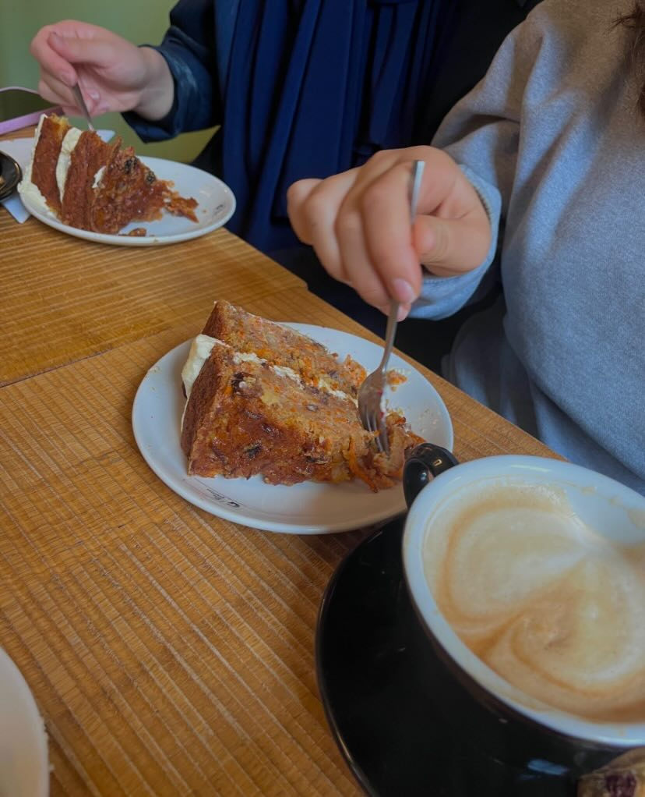
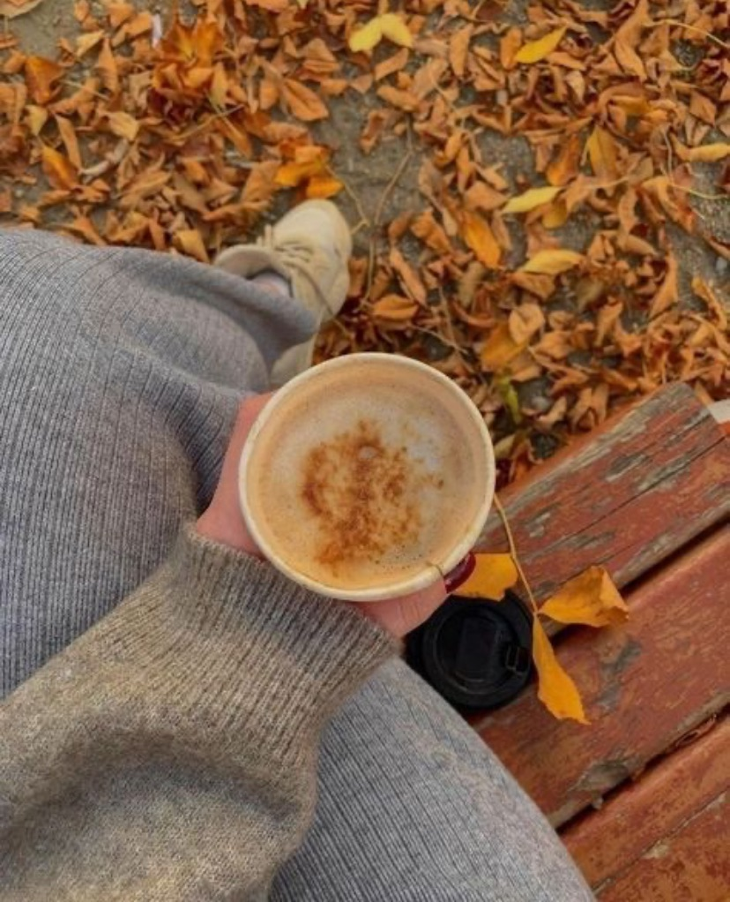
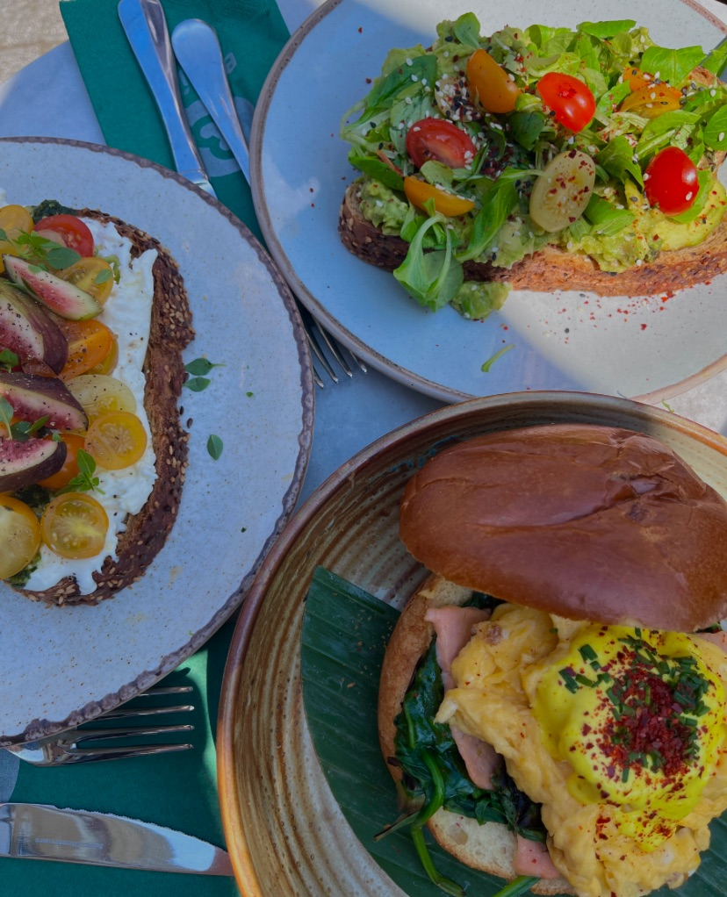

Hot Girl Herfst || Koffietentjes
We nemen je mee naar de gezelligste koffietentjes waar je kunt genieten van heerlijke warme drankjes en smaakvolle lekkernijen. Of je nu op zoek bent naar de perfecte plek voor een date, gewoon wilt relaxen met je favoriete boek of intensief wilt studeren, wij hebben de beste spots voor jou geselecteerd.
- Café Ko, Gevestigd in het Jakoba Mulderhuis. Hier zijn de drankjes niet alleen verrukkelijk, ze maken ook een milieubewuste keuze door geen wegwerpbekers te verkopen. Enkel en alleen hervulbare bekers. De koffie en andere lekkere dranken zijn hier relatief goedkoop en worden met liefde gemaakt. De vanille chai latte is mijn favoriet! 
- White Label Coffee, is gevestigd in de Jan Evertsenstraat, is White Label Coffee een branderij en koffiebar die bekend staat om zijn selectie van hoogwaardige koffiebonen. Ontspan hier met een cappuccino of flat white. 
- De Drie Graefjes, hoewel oorspronkelijk bekend als een lunchroom, is De Drie Graefjes ook een geweldige plek voor koffieliefhebbers. Het is gelegen in het hart van de stad en biedt een gezellige omgeving om te genieten van koffie en overheerlijke huisgemaakte taart. 
- Lot 61 Coffee Roasters, deze koffiebranderij in de Kinkerstraat brandt ter plaatse hun koffiebonen. De minimalistische inrichting en de focus op kwaliteit maken het een populaire keuze voor koffieliefhebbers. 
- Benji's, is gelegen aan de Wibautstraat, Benji's is niet alleen een koffiebar maar ook een gezellige ontmoetingsplaats met een superlekker brunch/lunch menu. Geniet van je koffie te midden van groene planten en een relaxte sfeer. 